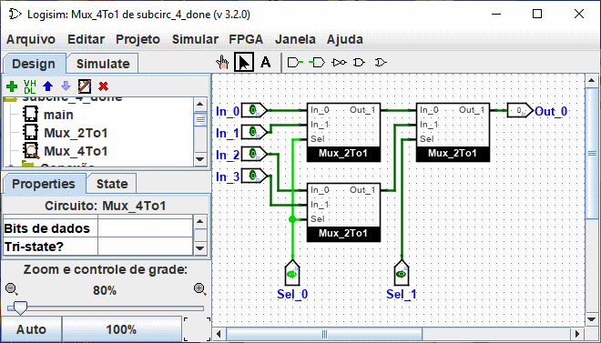

Использование подсхем
Теперь предположим, что мы хотим построить мультиплексор 4-в-1, используя экземпляры нашего мультиплексора 2-в-1. Конечно, сначала мы создадим новую схему, которую мы назовём Mux_4To1. Чтобы добавить мультиплексоры 2-в-1 в нашу схему, мы нажмём один раз на схему Mux_2To1 в панели проводника, чтобы выбрать её в качестве инструмента, и затем мы можем добавлять её копии, представляемые в виде коробок, щёлкая на холсте.

Если вы щёлкнули два раза на схеме Mux_2To1 в панели проводника, то вместо этого окно переключится на редактирование схемы Mux_2To1.
После создания схемы мы получим следующее.

Наша схема для мультиплексора 4-в-1 использует три копии мультиплексора 2-в-1, каждая из которых отрисована в виде коробки с контактами вдоль краёв. Контакты на этой коробке соответствую входным и выходным контактам в схеме Mux_2To1. Штифты на восточной стороне прямоугольника соответствуют входам схемы, а на западной - выходам. Они считываются с подсхемы справа налево и сверху вниз и помещаются на символ подсхемы сверху вниз.
Если контакты на чертеже подсхемы имеют метки, связанные с ними, то Logisim будет показывать эти метки в подсказке (то есть во временном текстовом поле), когда пользователь наведёт мышь на соответствующее место компонента подсхемы. Если вы находите эти подсказки раздражающими, вы можете отключить их через вкладку Чертёж окна Настройки.

Некоторые другие компоненты тоже будут показывать эти подсказки: для некоторых контактов встроенных триггеров, например, проведение мышью над ними объясняет, что делает этот контакт.
Кстати, каждый контакт схемы должен быть либо входом, либо выходом. Многие промышленные чипы имеют контакты, которые в некоторых ситуациях ведут себя как входы, а в других - как выходы; вы не можете создавать такие чипы в Logisim (по крайней мере, в текущей версии).
Logisim будет поддерживать информацию о разных состояниях для всех подсхем, входящих в схему. Например, если схема содержит триггер, и эта схема используется как подсхема несколько раз, то триггер каждой подсхемы будет иметь собственное значение при моделировании большей схемы.
Теперь у нас есть объявленный мультиплексор 4-в-1, и мы можем использовать его в других схемах. Logisim не имеет ограничения на то, насколько глубоко вложенными могут быть схемы - хотя он будет возражать против вложения схем внутрь себя.
Примечание: нет ничего плохого в редактировании схемы, используемой как подсхема; вообще-то, это довольно обычное дело. Помните, однако, что любые изменения контактов схемы (их добавление, удаление или перемещение) переставят их и в содержащей схеме тоже. Таким образом, при изменении контактов в схеме, вам также придётся изменять схемы, использующие её в качестве подсхемы.
Далее: Изменение внешнего вида подсхемы.